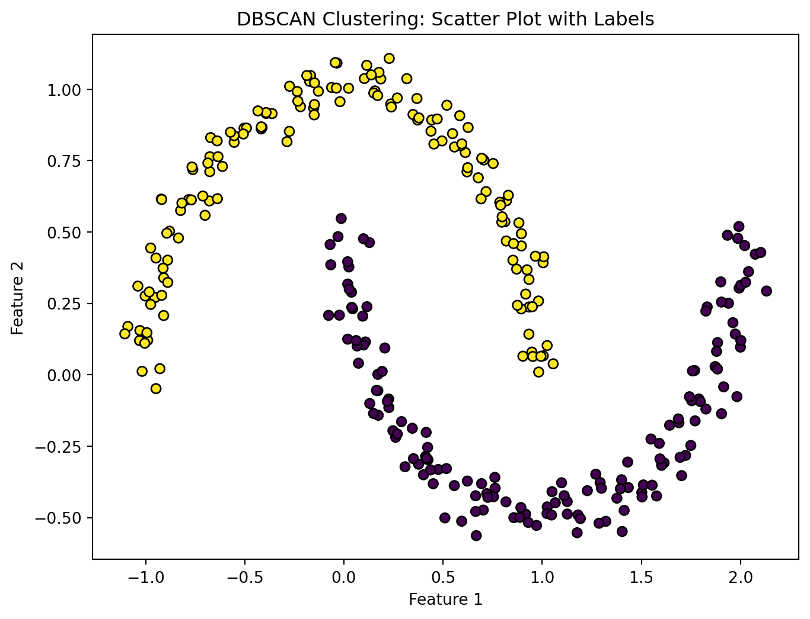
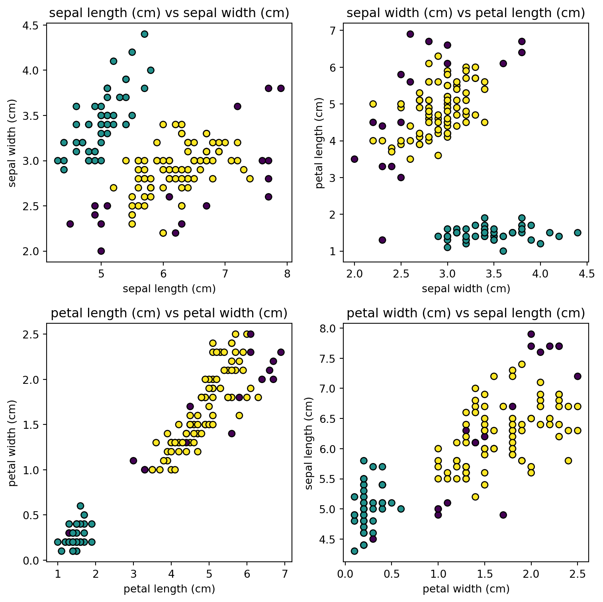

In the vast landscape of unsupervised machine learning, clustering stands as a powerful technique for uncovering hidden patterns and structures within data. Among the myriad of clustering algorithms, Density-Based Spatial Clustering of Applications with Noise (DBSCAN) has proven to be a versatile and effective tool. In this exploration, we delve into the world of DBSCAN, leveraging its ability to discover clusters of varying shapes and sizes within datasets. Our focus is not just on the algorithm itself, but on visualizing its outcomes through scatter plots enriched with DBSCAN labels.
Understanding DBSCAN
DBSCAN is known for its ability to identify clusters based on the density of data points. It excels in handling clusters of irregular shapes and effectively separates noise from meaningful patterns. The algorithm classifies points as core points, border points, or noise, providing a nuanced understanding of the dataset’s structure.
Simple Demonstration
Let’s dive into an example using fabricated data to easily display what the algorithm does. We’ll utilize a synthetic dataset generated using the make_moons function from the sklearn.datasets module. This function is commonly employed to create datasets with two interleaving crescent moon shapes, making it suitable for showcasing the capabilities of DBSCAN in identifying complex clusters.
The synthetic dataset consists of 300 data points, and a slight amount of noise (controlled by the noise parameter) is added to mimic real-world scenarios where data might not perfectly adhere to ideal shapes. This noise contributes to the dataset’s challenge, making it an excellent testbed for evaluating the robustness of clustering algorithms.
The scatter plot will display data points color-coded based on their DBSCAN labels. This visual representation allows us to intuitively grasp the clustering outcomes.
Code
from sklearn.datasets import make_moonsfrom sklearn.cluster import DBSCANimport matplotlib.pyplot as plt# Create a synthetic datasetX, _ = make_moons(n_samples=300, noise=0.05, random_state=42)# Apply DBSCANdbscan = DBSCAN(eps=0.3, min_samples=5)labels = dbscan.fit_predict(X)# Plotting the resultsplt.figure(figsize=(8, 6))plt.scatter(X[:, 0], X[:, 1], c=labels, cmap='viridis', marker='o', edgecolors='k')plt.title('DBSCAN Clustering: Scatter Plot with Labels')plt.xlabel('Feature 1')plt.ylabel('Feature 2')plt.show()

A Practical Application: Clustering Physical Features of Irises
For a more practical demonstration, we’ll apply DBSCAN clustering to a well-known dataset in the field of machine learning – the Iris dataset. This dataset encompasses measurements of various features of iris flowers, including sepal length, sepal width, petal length, and petal width.
Let’s focus on sepal characteristics and apply DBSCAN clustering to explore potential patterns in the data. Sepals are the outer parts of the flower that protect the inner reproductive organs. By clustering based on sepal features, we aim to uncover inherent structures within the iris species.
Iris Dataset Overview:
Sepal Length and Width: These measurements, in centimeters, provide insights into the size and shape of the outer floral structure.
Petal Length and Width: These measurements, also in centimeters, capture details about the inner floral structure.
Code
from sklearn.datasets import load_irisfrom sklearn.cluster import DBSCANimport matplotlib.pyplot as plt# Load the Iris datasetiris = load_iris()X = iris.data # Use all four features for clustering# Apply DBSCANdbscan = DBSCAN(eps=0.5, min_samples=5)labels = dbscan.fit_predict(X)# Plotting the resultsfig, axes = plt.subplots(2, 2, figsize=(8, 8))# Plot features against each otherfor i inrange(4): row, col =divmod(i, 2) axes[row, col].scatter(X[:, i], X[:, (i +1) %4], c=labels, cmap='viridis', marker='o', edgecolors='k') axes[row, col].set_title(f'{iris.feature_names[i]} vs {iris.feature_names[(i +1) %4]}') axes[row, col].set_xlabel(iris.feature_names[i]) axes[row, col].set_ylabel(iris.feature_names[(i +1) %4])plt.tight_layout()plt.show()

Clustering Sepal Features:
The generated scatter plots display clusters based on sepal length and width. Each point represents an iris flower, and its color corresponds to the cluster assigned by the DBSCAN algorithm.
Interpretation:
Distinct Groups: Clusters may represent groups of iris flowers sharing similar sepal characteristics.
Outliers: Data points that don’t belong to any cluster may indicate unique or uncommon specimens.
Cluster Separation: Clear separation between clusters suggests distinct differences in sepal dimensions among iris species.
By visualizing these clusters, we gain a deeper understanding of how DBSCAN identifies patterns and groupings within complex datasets, offering valuable insights into the underlying structure of the Iris dataset.
The Power of Visualization
Visualizing clustering results is essential for gaining insights and communicating findings. Scatter plots serve as a canvas for representing complex data structures, and when enriched with DBSCAN labels, they become a powerful tool for pattern recognition.
Beyond two-dimensional datasets, DBSCAN proves valuable in clustering high-dimensional data, where traditional visualization becomes challenging. In scenarios with numerous features, DBSCAN excels in identifying clusters and revealing intricate patterns that might be elusive in higher dimensions. The algorithm’s ability to handle varying shapes and densities makes it particularly effective in uncovering complex abstractions within multi-dimensional spaces.
However, it’s worth mentioning that while DBSCAN is a versatile clustering algorithm, it may face challenges in certain high-dimensional spaces. The curse of dimensionality can impact the performance of traditional distance-based metrics, affecting the algorithm’s ability to accurately identify clusters in extremely high-dimensional datasets. In such cases, careful consideration of dimensionality reduction techniques and feature engineering becomes crucial to mitigate these challenges and enhance the effectiveness of DBSCAN.
By applying DBSCAN to high-dimensional datasets, researchers and data scientists can navigate through intricate structures, unveil hidden relationships, and gain valuable insights into the underlying relationships between features within complex datasets. This capability extends the reach of DBSCAN to a wide array of applications, from image processing and natural language processing to biological and financial data analysis.